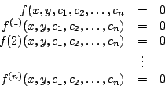
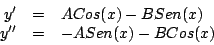
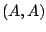
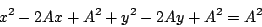
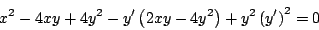
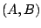
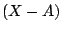
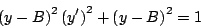
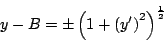

|
|
|
|
|Instituto Tecnológico de Costa Rica|Escuela de Matemática| M. Sc. Geovanni Figueroa M. |
|
|
Ecuación diferencial de una familia de curvas
En esta sección discutimos un poco acerca del proceso inverso que nos ocupará a lo largo del curso. Recuerde que nuestro objetivo principal es determinar la solución general de una ecuación diferencial, la cual es una familia de curvas , sin embargo, ahora trataremos de determinar una ecuación diferencial cuya solución general sea una familia de curvas dada.
Dada una familia de curvas

a partir del cual podemos obtener la ecuación diferencial buscada.
Ejemplo
Determine una ecuación diferencial cuya solución general sea la familia de curvas
Derivando dos veces la ecuación de la familia (1.6), obtenemos

Y observe que
Observación
Algunas veces la familia de curvas se nos presenta en forma de un enunciado a partir del cual debemos obtener la ecuación, como muestran los siguientes ejemplos.
Ejemplo
Encontrar una ecuación diferencial cuya solución general sea
la familia de círculos con centros sobre la recta
La familia de círculos se muestra en la figura
6.
Observe que por estar centrados sobre la recta
Figura 6
Como los círculos están centrados en  y tienen radio
Desarrollando las fórmulas notables obtenemos

Derivando implícitamente con respecto a
Despejando

Ejemplo Encontrar una ecuación diferencial cuya solución general sea la familia de círculos con radio 1 y centro en . La ecuación de la familia de círculos con centro en y radio 1 es
Derivando implícitamente respecto a
Despejando el término  de la ecuación (1.10) y sustituyéndolo en la ecuación de la familia (1.9) obtenemos

la cual no contiene a constante

De donde, derivando implícitamente y simplificando obtenemos la ecuación diferencial deseada
Observe que el lado derecho de la ecuación (1.11) es la fórmula de curvatura y efectivamente la curvatura de los círculos es 1.
Subsecciones |